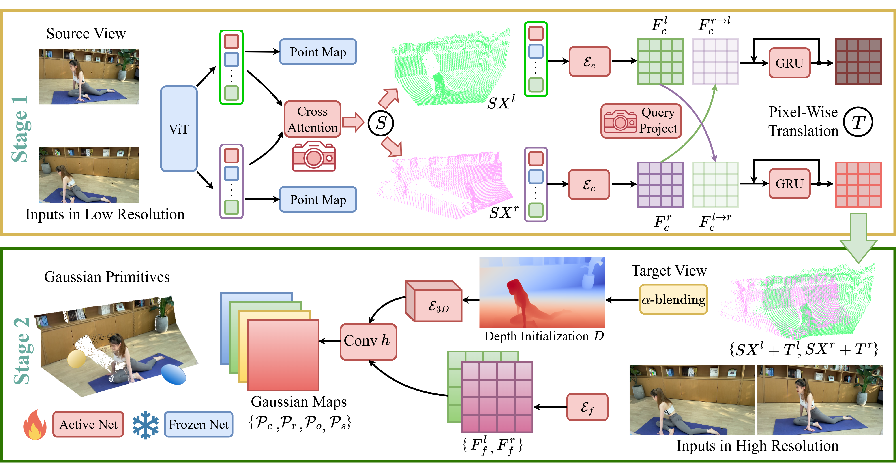

<!DOCTYPE html>
<html lang="en">
  <head>
    <meta charset="UTF-8">
    <meta http-equiv="X-UA-Compatible" content="IE=edge">
    <meta name="viewport" content="width=device-width, initial-scale=1">
    <title>Projectpage of Splat-SAP</title>
    <!-- Bootstrap -->
    <link href="assets/GPS-Gaussian+/bootstrap-4.4.1.css" rel="stylesheet">
    <link rel="stylesheet" href="https://cdnjs.cloudflare.com/ajax/libs/font-awesome/4.7.0/css/font-awesome.min.css"> 
  </head>

  <!-- cover -->
  <section>
    <div class="jumbotron text-center mt-0">
      <div class="container">
        <div class="row">
          <div class="col-12">
            <h2>Splat-SAP: Feed-Forward Gaussian Splatting for Human-Centered Scene with<br>Scale-Aware Point Map Reconstruction</h2>
            <h4 style="color:#5a6268;">AAAI 2026</h4>
            <hr>
            <h6> <a href="https://yaourtb.github.io" target="_blank">Boyao Zhou<sup>2,1</sup></a>, 
                <a href="https://shunyuanzheng.github.io" target="_blank">Shunyuan Zheng<sup>2</sup></a>,
                <a>Zhanfeng Liao<sup>1</sup></a>, 
                <a>Zihan Ma<sup>1</sup>*</a>, 
                <a href="https://itoshiko.com/" target="_blank">Hanzhang Tu<sup>1</sup></a>,
                <a href="https://liuboning2.github.io" target="_blank">Boning Liu<sup>1</sup></a>,
                <a href="https://liuyebin.com" target="_blank">Yebin Liu<sup>1</sup><sup>2&#x2709;</sup></a></h6>
            <p><sup>1</sup>Tsinghua University<sup>&nbsp;&nbsp;&nbsp;&nbsp;&nbsp;&nbsp;&nbsp;&nbsp;2</sup>Ant Group
            <br>*Work done during an internship at Tsinghua University&nbsp;&nbsp;<sup>&#x2709</sup>Corresponding author
            </p>

        </div>
      </div>
    </div>
  </section>
  <br>

  <section>
    <div class="container">
      <div class="row">
        <div class="col-12 text-center">
          <h3>Abstract</h3>

          <p class="text-left"> We present Splat-SAP, a feed-forward approach to render novel views of human-centered scenes from binocular cameras with large sparsity. Gaussian Splatting has shown its promising potential in rendering tasks, but it typically necessitates per-scene optimization with dense input views. Although some recent approaches achieve feed-forward Gaussian Splatting rendering through geometry priors obtained by multi-view stereo, such approaches still require largely overlapped input views to establish the geometry prior. To bridge this gap, we leverage pixel-wise point map reconstruction to represent geometry which is robust to large sparsity for its independent view modeling. In general, we propose a two-stage learning strategy. In stage 1, we transform the point map into real space via an iterative affinity learning process, which facilitates camera control in the following. In stage 2, we project point maps of two input views onto the target view plane and refine such geometry via stereo matching. Furthermore, we anchor Gaussian primitives on this refined plane in order to render high-quality images. As a metric representation, the scale-aware point map in stage 1 is trained in a self-supervised manner without 3D supervision and stage 2 is supervised with photo-metric loss. We collect multi-view human-centered data and demonstrate that our method improves both the stability of point map reconstruction and the visual quality of free-viewpoint rendering. 
            </p>
        </div>
      </div>
    </div>
  </section>
  <br>

  <section>
    <div class="container">
      <div class="row">
          <div class="col-12 text-center">
            <h3>Method</h3>
              <hr style="margin-top:0px">
            
            <p>&nbsp;</p>
            <p>
              <strong>Overview</strong>: Our method consists of two stages. In the first stage, we take two coarse images as input and predict corresponding point maps, along with an affine transform. In the second stage, our refinement module takes transformed points and fine-resolution images as input, and predicts Gaussian plane of target view for high-quality rendering.
            </p>
            <p>&nbsp;</p>
          </div>
      </div>
    </div>
  </section>
  <br>
  
  
  <footer class="text-center" style="margin-bottom:10px">
      Thanks to <a href="https://lioryariv.github.io/" target="_blank">Lior Yariv</a> for the website template.
  </footer>

</body>
</html>
